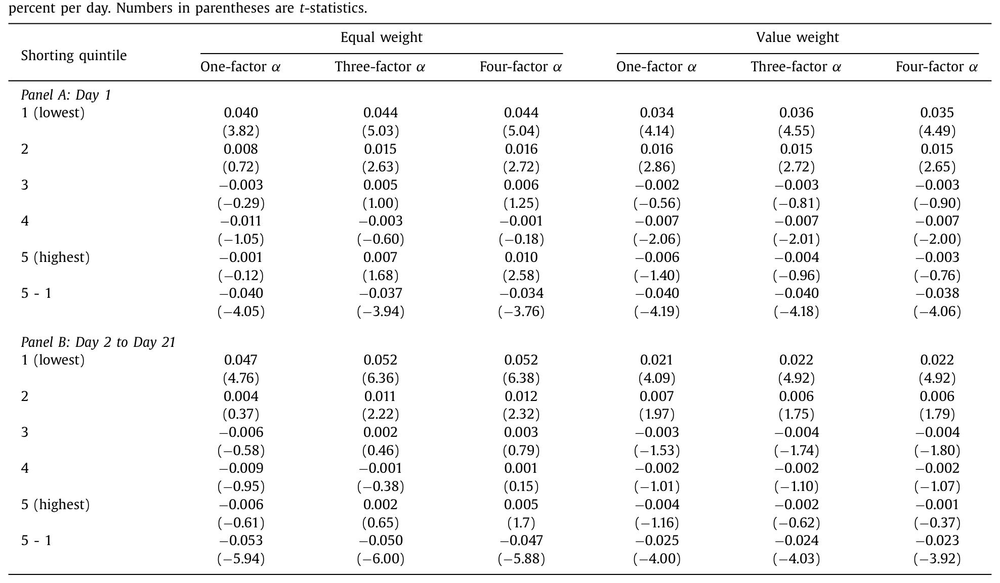
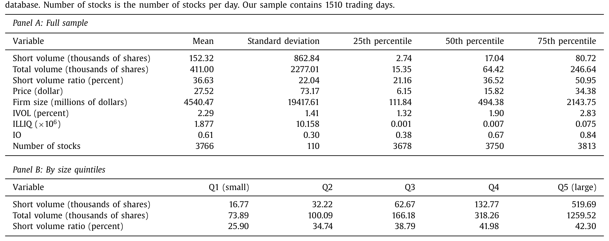
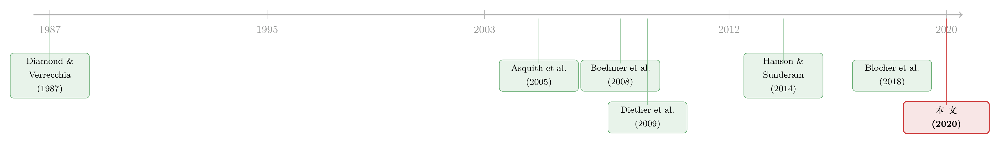

短卖单不再是「先知」：当做空数据被实时公开之后
本文读的是 Wang, Yan & Zheng (2020, Journal of Financial Economics)：在 2010–2015 这段每日卖空量被 FINRA 实时公开的样本里，做空流仍然显著预测未来一年的负收益，且这种预测能力来自「长期、公开」的信息（异象套利），而非「短期、私有」的内幕。把同样的方法搬回 2005–2007 的 RegSHO 数据，预测期却短得多——这暗示着，做空者作为一个群体，可能已经从「抢消息」转向了「磨异象」。
1 一个本不该存在的预测能力
先讲一个让人有点不舒服的事实。
监管者一直担心做空者搅乱市场，于是在 2008–2009 那场危机之后，美国证监会 (SEC) 要求 FINRA 把个股层面的每日卖空量「当天盘后」就挂到网上，人人可看、实时更新。逻辑很朴素：阳光是最好的消毒剂。如果做空者手里真有什么独门信息，那么一旦他们的下单量被公之于众，市场就该在当天把这点信息吸收进价格里——到了第二天，过去的做空量就不该再预测任何东西了。这是半强式有效市场 (semi-strong form market efficiency) 最直白的一个推论。
可现实偏偏不是这样。
Wang、Yan 和 Zheng 三位作者沿用 Boehmer, Jones and Zhang (2008) 的经典做法：每天根据过去五天的做空量占比 (short volume ratio)——也就是卖空量除以总成交量——把股票分成五组，跳过一天（剔除微观结构噪声），然后持有 20 天。结果呢？被大量做空的那一组，相对被轻微做空的那一组，年化的三因子风险调整收益（即 Fama and French (1996) 三因子 alpha）足足低了 12.6%（t = 6.00，等权），价值加权口径下也有 6.0%（t = 4.03）。

Table 2
换句话说，在数据已经被实时公开了的年代，过去的做空流照样能预测未来的负收益。市场并没有在「公告日」就把信息榨干——作者单独看了组合形成后的第 1 天（也就是卖空数据的公告日），发现重仓做空股确实当天就跑输，但幅度小得可怜，只有 3.4 到 4 个基点。剩下绝大部分的预测能力，都拖到了第 2 天往后。
这就立住了一个张力：信息明明是公开的，价格却慢吞吞地不肯吸收。 这要么说明做空者厉害到市场跟不上，要么说明——这种「预测能力」根本不是信息，而是某种会反噬的东西。整篇论文，就是围绕这一个问题反复拉扯，一直拉到底。
2 是「信息」，还是「踩踏」？——用长期收益做裁判
接着，一个自然的问题是：这 12.6% 到底是好事还是坏事？
它有两副完全相反的面孔。
第一副面孔是「知情做空 (informed shorting)」。 做空者看出了某些股票被高估，用真金白银把价格推回基本面。价格的下跌是永久性的，因为它本就该在那儿——这种情况下，做空者是市场效率的功臣。
第二副面孔是「破坏性做空 (destabilizing shorting)」。 这里又分两种机制。一是 Brunnermeier and Oehmke (2014) 笔下的掠夺性做空 (predatory short selling)：公开的卖空数据反倒成了协调机制，一群人合伙砸盘，把价格打到基本面之下。二是 Stein (2009) 说的拥挤 (crowding)：看到某只股票被大量做空的公告，更多人一拥而上跟着做空——这是典型的正反馈交易，脚下没有基本面这个锚。无论哪一种，价格都会在短期内被打过头，然后反转回基本面。
注意，这两副面孔在短期里长得一模一样：都会让重仓做空股先跌。真正能把它们区分开的，是长期。 如果是知情做空，价格冲击是永久的，不该有反转；如果是破坏性做空，迟早要反弹回去。
于是作者把做空组合的表现一路追踪到一年之后。答案很干脆：没有任何反转的迹象，反而是显著的收益延续 (return continuation)。 重仓做空股在初始持有期之后的那个月、那个季度、那一年里，继续跑输轻仓做空股。
这一步是全文的枢纽。没有反转，就排除了掠夺与拥挤——那 12.6% 不是踩踏踩出来的幻觉，而是实打实的信息。可矛盾也随之而来：既然是信息，为什么它能慢慢渗透整整一年？ 真正的私有信息（比如下周的坏财报）哪有一年的保质期？
3 真正关键的一步：把「短期」和「长期」做空流掰开
然后，论文做了一件此前所有研究都没做过的事——把做空流按「期限」拆开。
以往研究（Boehmer et al., 2008; Diether et al., 2009）默认做空者是短线客，只盯着过去几天的做空量。但如果预测能力真能撑一年，那也许做空者盯的根本是长期的东西。为了验证，作者构造了两个变量：
- 短期做空流：过去一周的平均做空占比；
- 长期做空流：过去一周之前的那个月（或那个季度）的平均做空占比。
如果做空者专做短线、抢的是即将公布的消息，那短期做空流就该比长期做空流更能预测收益。可结果恰恰相反：长期做空流的预测力更强，重仓与轻仓之间的收益差更大。 也就是说，持续地、长期地被做空，比短期内突然被做空，更能预言坏结局。
为了把这一刀切得更利落，作者又造了一个异常做空流 (abnormal shorting flows)：短期做空流减去长期做空流，刻画的是「最近一周相比长期常态，做空有没有突然激增」。如果做空者真握着短期私有信息，他们会因为做空的持仓成本很高，赶在消息公布前一刻才下手——那么高异常做空流就该强烈预测低收益。
可作者发现：异常的短期做空流，对未来收益几乎没有预测力。 真正预测负收益的，是那种长期持续的做空，而不是一时的激增。
到这里，反转出现了：做空者的本事，不在「抢」，而在「磨」。
4 用三类坏消息做反证：他们真的不是「先知」
但「长期信息」是个含糊的说法。做空者预测收益的能力，可能来自两条完全不同的路：要么他们拥有私有信息，要么他们更擅长加工公开信息。怎么区分？
作者的办法很聪明：直接去看做空者在坏消息公布之前有没有异动。如果他们真有内幕，就该在坏消息砸下来之前的几天里悄悄加仓。作者用了三个坏消息的代理变量——负的盈余惊奇 (negative earnings surprises)、分析师下调评级 (analyst downgrades)、大额内部人卖出 (large insider sales)——逐一去查这些事件前五天的做空流。
结果：没有任何证据表明做空流在这些坏消息前异常升高。 作为一个群体，做空者并不像握着关于具体坏消息的私有情报。
这并不是说「从来没有知情做空者」。Christophe, Ferri and Angel (2004)、Christophe, Ferri and Hsieh (2010) 等研究确实在盈余公告、评级下调前抓到过做空者抢跑。本文的措辞很克制：作为一个群体、在这个实时披露的样本期里，私有信息不再是主导。这两者并不矛盾。
排除了私有信息，那条「公开信息」的路就只剩一个最自然的答案了。
5 落点：做空者在「套」异象
于是论文落到了它真正的核心贡献上——做空者在系统性地套利那些早已被学术界写烂了的异象 (anomalies)。
作者选了 20 个 prominent anomaly 变量（动量、资产增长、毛利率等等，全表列在附录里），去看做空流在这些异象的「空头腿」上是不是更高。答案是肯定的：做空流在过去的输家、高资产增长股、低盈利股里显著更高。
这一下子把前面所有的线索都串起来了。异象变量有两个特点：一是持续（一只去年的输家，今年大概率还是输家），二是它的信息要花很长时间才被价格吸收。做空者既然在套这些异象，那他们的做空流自然就：(1) 同时预测短期和长期收益；(2) 长期、持续的做空流比短期做空流预测得更准。一切都自洽了。
「做空者套异象」并不是本文首创的猜想，但本文用每日做空流、在20 个异象上做了迄今最系统的检验。关于异象收益究竟由谁、出于何种动机推动，可参见《异象收益究竟是谁推动的？》与《买卖双方各执一词：当 193 个异象告诉你「谁是聪明钱」》。
6 真正的「对照组」：把方法搬回 2005–2007
讲到这儿，一个挑剔的读者一定会追问：你怎么知道这是这个时代特有的现象，而不是做空流一向如此？
这正是作者最漂亮的一招。他们把完全相同的分析搬回 2005–2007 年的 RegSHO 数据——那也是每日做空数据，但不是实时公开的（见 Diether et al., 2009）。对照之下，三个结论全部反了过来：
- 在 2005–2007，做空流只显著预测短期收益，过了一个月（初始持有期）之后，重仓做空股几乎不再继续跑输；
- 短期做空流比长期做空流更有信息含量；
- 异常的短期做空流显著预测负收益。
这三条，恰好是 2010–2015 样本里被推翻的那三条。一句话：同一套做空流，在两个时代讲了两个完全不同的故事。 早年的做空者像短线先知，近年的做空者像长线套利者。
作者由此给出了全文的大判断：做空者作为一个群体，似乎把重心从「交易短期私有信息」转向了「交易长期公开信息」。 他们把这归因于三件事的叠加——卖空量大幅上升、每日数据实时公开、以及对非公开信息泄露更严的监管环境。当抢跑越来越危险、私有信息越来越难拿，磨异象就成了更稳妥的活法。
顺带，这也直接回答了那场监管辩论：实时公开每日卖空量，并没有把市场搞乱。 没有掠夺、没有拥挤、没有长期反转。做空者继续做着对市场效率有益的事，只是换了一种信息来源。（关于把做空当成一种「投票」、以及这种投票准不准的讨论，可参见《把卖空看成一次「投票」》。）
7 数据与口径
为了让上面的数字站得住，简单交代一下样本。做空量与总成交量来自 FINRA（按 ticker 合并到 CRSP），样本是 2010 年 1 月到 2015 年 12 月、NYSE/AMEX/NASDAQ 上 CRSP 股票代码为 10 或 11 的普通股，共 1510 个交易日、平均每天 3766 只股票。机构持股来自 Thomson 13F，盈余与公告日来自 Compustat，分析师评级来自 I/B/E/S，内部人交易来自 Thomson Insider Trading。

Table 1
值得一提的是做空的「普及度」：样本期内平均每日卖空量约 152,320 股，占总成交量约 36%。这远高于 Boehmer et al. (2008) 报告的 2000–2004 年 NYSE 的 12.9%，也高于 Diether et al. (2009) 报告的 2005 年 NYSE 23.9%、Nasdaq 31.3%。如表 1 所示，做空占比甚至随公司规模单调上升——大盘股里做空占成交量的比重更高（Q5 约 42.3%），而最小一组里也有近 26%。做空，早已不是边缘行为。
作者还顺手检验了套利限制 (limits to arbitrage) 这条解释（Shleifer and Vishny, 1997; Pontiff, 2006）：把股票按规模、特质波动率等分组，看做空流的预测力是不是在套利更难的股票里更强。这为「市场为何吸收得慢」提供了一个补充答案——不是市场看不见信息，而是把价格纠正过来本身有成本。
8 文献脉络
把这条线捋一捋，会看得更清楚。
最早一拨研究用的是月度空头利息 (monthly short interest)，结论很拧巴：Figlewski (1981)、Brent, Morse and Stice (1990)、Desai et al. (2002)、Asquith, Pathak and Ritter (2005) 在「做空者到底知不知情」上给出了相互矛盾的证据。理论这边，Diamond and Verrecchia (1987) 早早指出，由于做空有约束，卖空往往携带负面私有信息，价格调整会因此变慢。

真正的转折发生在数据频率提上来之后。Boehmer, Jones and Zhang (2008) 用 NYSE 的专有每日数据、Diether, Lee and Werner (2009) 用 RegSHO 的每日数据，一致地发现重仓做空股跑输——但两篇都强调自己只看短期，并都申明结论不违背半强式有效市场（因为投资者拿不到他们的数据）。
与此并行的，是一条「做空者套异象」的支线：Dechow et al. (2001) 发现做空者盯着市盈率、市净率等基本面比率被高估的公司；Drake, Rees and Swanson (2011) 说他们用了 11 类基本面信息；Hirshleifer, Teoh and Yu (2011) 抓到应计异象的套利；Hanson and Sunderam (2014) 则发现做空者在套动量与价值。
再往后，是关于「做空者到底是谁」的精细化。Blocher, Haslag and Zhang (2018) 区分了「short traders（做短命信息）」与「short investors（做长命信息）」——本文发现做空流能预测长期收益，正好印证了长视野做空者的存在。而 Brunnermeier and Oehmke (2014)、SEC (2014) 等则把火力集中在「实时披露会不会反被用来协调砸盘」的政策担忧上。
本文 (2020) 的位置就在这几条线的交汇处：它第一次在「数据实时公开」的样本里，把短期/长期、正常/异常的做空流全部拆开，给出了一个统一的结论——做空者从抢消息转向磨异象，而公开披露并没有把市场搞坏。
9 评论与延伸（Q&A + 研究方向）
(a) 几个可能的疑问
Q：做空「量」和做空「利息」是一回事吗？为什么结论差这么多？
不是一回事，这恰恰是关键。空头利息 (short interest) 是某一时点未平仓的做空头寸存量，月度公布、滞后大；本文用的做空流 (shorting flow) 是每日的做空成交量，是流量。流量数据频率高、更贴近实际下单行为，这也是为什么本文能把「短期 vs 长期」拆得这么细，而早年用月度存量的研究做不到。
Q：12.6% 的年化 alpha 听起来高得不真实，是不是赚不到？
要谨慎看。首先它是等权口径，价值加权只有 6.0%，说明效应在小盘股里更强——而小盘股恰恰是做空成本高、套利限制大的地方。其次，作者发现这个收益差主要由轻仓做空组的正 alpha 驱动，重仓做空组的 alpha 反而不显著。也就是说，真正能落袋的「做空赚钱」部分，比这个数字小得多；扣掉借券费、冲击成本后还剩多少，是另一回事。
Q：「没有长期反转」就能证明是知情做空吗？会不会只是反转来得更晚？
这是识别上最值得追问的一点。作者追踪到一年，看到的是延续而非反转，逻辑上排除了短窗口的踩踏。但严格说，「永久冲击」与「极慢反转」在有限样本里难以彻底区分。本文的说服力更多来自横截面的一致性——做空流集中在异象的空头腿，而异象本身就是慢渗透的，这条机制证据比单纯的「无反转」更硬。
Q：说做空者「转向公开信息」，会不会只是因为样本期不同，碰巧赶上异象更赚钱的年份？
这正是 RegSHO 对照组要回答的。2005–2007 同样是每日数据，结论却是短期、私有主导。两个样本方法完全一致、唯一的大区别是「是否实时公开 + 监管环境」，这让「时代转变」的解释比「异象周期」更可信。当然，这仍是关联性而非干净的因果——没有一个随机把「实时披露」打开/关闭的实验。
Q：异常做空流不预测收益，是不是说短期信息交易已经完全消失了？
不能这么读。本文讲的是总量层面、按周聚合的异常做空流。它对未来收益和坏消息都没预测力，说明短期私有信息不再是群体层面的主导力量；但个体、更高频（如盘中、公告前数小时）的知情做空完全可能依然存在，只是被稀释在了海量的异象套利单里。
Q：实时披露「没搞乱市场」，是不是就说明披露一定是好的？
本文支持披露派，但它测的是「有没有破坏性做空」，没有直接测披露的净福利。Kahraman and Pachare (2018) 发现更频繁披露让信息更快入价、提升效率；Hu (2017) 发现它逼公司增加自愿披露。综合看是偏正面，但披露会不会在极端时点（如危机中）改变行为，本文的平静样本期回答不了。
(b) 几个可能的研究问题与提案
1. 把同样的「短期 vs 长期做空流」框架搬到公司债市场
【经济故事】公司债的做空远比股票稀少、成本更高，知情交易者更可能集中在信用恶化的长期信号上（评级下调、违约临近）。如果债券做空流也呈现「长期比短期更有信息」，那本文的「磨异象」逻辑就能推广到信用市场，并能直接对接信用利差的可预测性。 【可行性】中。难点在数据：债券层面的做空/借券数据稀疏（可用 Markit/DataExplorers 的借券费率与利用率做代理）。识别上可借鉴本文的组合排序 + 长期/异常分解。doable，但样本覆盖和流动性噪声是真实障碍。
2. 外资做空者 vs 本土做空者：谁在抢消息、谁在磨异象？
【经济故事】本文把做空者当成一个同质群体。但若能区分下单来源，一个自然猜想是：本土机构更可能握有短期私有信息（抢跑坏消息），而跨境/外资做空更依赖公开的、规则化的异象信号。这能给「外资是否更知情」的老争论加一个做空维度的证据。 【可行性】低到中。美国的聚合 FINRA 数据无法区分交易者身份；需要交易所层面带账户类型的监管数据，或转向有此类标识的市场（如某些欧洲、亚洲交易所）。识别清晰，但数据门槛高。
3. 实时披露与做空者的「流动性时机」
【经济故事】既然做空数据当天盘后公开，做空者会不会策略性地择时下单，以隐藏自己的长期意图、避免被拥挤交易跟风？这能把本文「无拥挤」的发现往机制层面推一步——是市场没人跟，还是做空者主动「藏」？ 【可行性】中。需要盘中（intraday）做空成交数据与披露时点对齐，做一个事件研究 / 断点设计（披露阈值附近）。数据可得性中等，识别策略清楚，是一个相对 doable 的扩展。
4. 把「做空者套异象」与异象的衰减联系起来
【经济故事】如果做空者系统性地套异象，那异象被套得越狠，理应衰减得越快。能否用做空流的强度，去预测哪些异象在样本期内衰减得更快？这会把本文与「异象为何消失」的文献直接缝合。 【可行性】高。本文已经构造了 20 个异象与每日做空流，所需数据全部公开（CRSP/Compustat/FINRA）。可做异象层面的面板回归：异象空头腿的做空强度 → 后续异象收益的衰减。识别需小心反向因果，但整体高度可行。
10 我的判断
这篇论文的贡献，不在于发现了一个新的预测变量，而在于重新讲了一个旧变量的故事。它把做空流从「短线先知的影子」改写成「长线套利者的足迹」，而支撑这次改写的，是两块扎实的证据：长期/异常做空流的分解，和 2005–2007 RegSHO 的对照。后者尤其重要——没有这个对照组，「时代转变」就只是一句口号。
我对识别的两点保留：其一，「无长期反转 = 知情做空」在统计上不是铁证，慢反转与永久冲击难分，论文真正的底气其实来自「做空流落在异象空头腿」这条横截面机制，而这一步本可以再做得更结构化（比如直接用做空流去解释异象 alpha 的多少）。其二，「做空者转向公开信息」是一个群体层面的、相关性的论断；它与「实时披露这一制度变化」之间，缺一个干净的外生冲击来钉死因果——本文只能说三件事叠加在一起、且时序吻合。
后续我最想看到的，是把这套框架推进信用市场与跨境持有人维度：当做空成本更高、信息更稀缺时，「磨异象」还成不成立？以及，能否找到一个真正外生地切换「实时披露」开关的设定，把本文的相关性升级为因果。在那之前，这篇论文已经足够漂亮地说明了一件事——阳光照进来之后，做空者没有逃走，只是改变了他们觅食的方式。
参考文献
Asquith, P., Pathak, P., Ritter, J.R. (2005). Short interest, institutional ownership, and stock returns. Journal of Financial Economics 78, 243–276.
Blocher, J., Haslag, P., Zhang, C. (2018). Short Traders and Short Investors. Working paper, Vanderbilt University.
Boehmer, E., Jones, C.M., Zhang, X. (2008). Which shorts are informed? Journal of Finance 63, 491–527.
Brent, A., Morse, D., Stice, E.K. (1990). Short interest: explanations and tests. Journal of Financial and Quantitative Analysis 25, 273–289.
Brunnermeier, M., Oehmke, M. (2014). Predatory short selling. Review of Finance 18, 2153–2195.
Christophe, S.E., Ferri, M.G., Angel, J. (2004). Short selling prior to earnings announcements. Journal of Finance 59, 1845–1875.
Christophe, S.E., Ferri, M.G., Hsieh, J. (2010). Informed trading before analyst downgrades: evidence from short sellers. Journal of Financial Economics 95, 85–106.
Dechow, P., Hutton, A., Meulbroek, L., Sloan, R.G. (2001). Short sellers, fundamental analysis, and stock returns. Journal of Financial Economics 61, 77–106.
Desai, H., Ramesh, K., Thiagarajan, S.R., Balachandran, B.V. (2002). An investigation of the informational role of short interest in the Nasdaq market. Journal of Finance 57, 2263–2287.
Diamond, D.W., Verrecchia, R.E. (1987). Constraints on short-selling and asset price adjustment to private information. Journal of Financial Economics 18, 277–311.
Diether, K.B., Lee, K.H., Werner, I.M. (2009). Short-sale strategies and return predictability. Review of Financial Studies 22, 575–607.
Drake, M., Rees, L., Swanson, E. (2011). Should investors follow the prophets or the bears? Evidence on the use of public information by analysts and short sellers. Accounting Review 86, 101–130.
Fama, E.F., French, K.R. (1996). Multifactor explanations of asset pricing anomalies. Journal of Finance 51, 55–84.
Figlewski, S. (1981). The informational effects of restrictions on short sales: some empirical evidence. Journal of Financial and Quantitative Analysis 16, 463–476.
Hanson, S., Sunderam, A. (2014). The growth and limits of arbitrage: evidence from short interest. Review of Financial Studies 27, 1238–1286.
Hirshleifer, D., Teoh, S.H., Yu, J. (2011). Short arbitrage, return asymmetry, and the accrual anomaly. Review of Financial Studies 24, 2429–2461.
Hu, D. (2017). Does the Public Availability of Market Participants' Trading Data Affect Firm Disclosure? Working paper, Northwestern University.
Kahraman, B., Pachare, S. (2018). Show Up Your Shorts! Working paper, University of Oxford.
Pontiff, J. (2006). Costly arbitrage and the myth of idiosyncratic risk. Journal of Accounting and Economics 42, 35–52.
Securities and Exchange Commission (2014). Short-sale Position and Transaction Reporting. US Government Printing Office, Washington, DC.
Shleifer, A., Vishny, R.W. (1997). The limits of arbitrage. Journal of Finance 52, 35–55.
Stein, J. (2009). Sophisticated investors and market efficiency. Journal of Finance 64, 1517–1548.
Wang, X., Yan, X., Zheng, L. (2020). Shorting flows, public disclosure, and market efficiency. Journal of Financial Economics 135, 191–212.